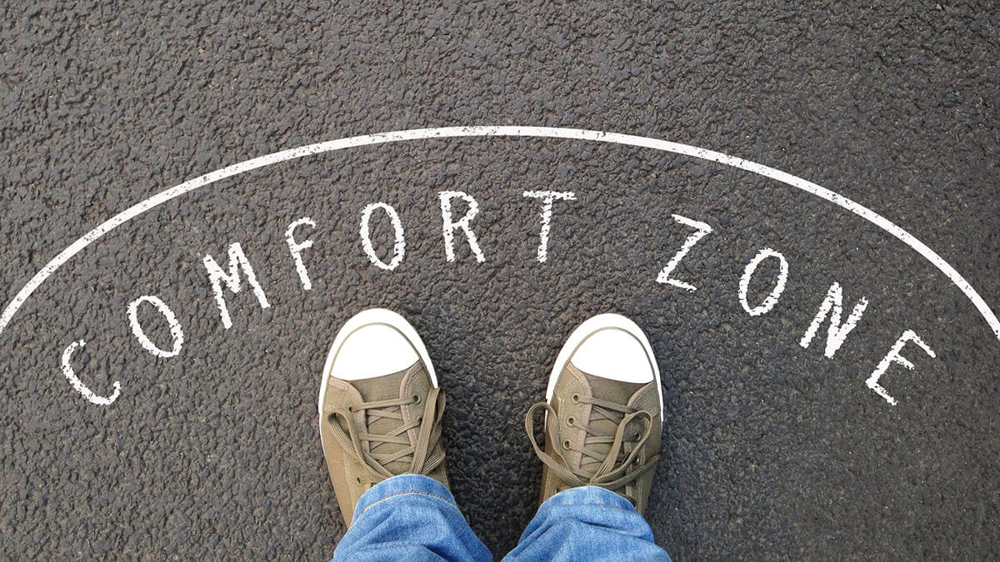

Voyager en solo, voyager vers soi-même
Faire ses valises et aller à une destination inconnue seul transcende les frontières géographiques pour devenir une aventure introspective profonde. Bien plus qu'une escapade, ce type de voyage met à votre disposition des opportunités d'épanouissement personnel exceptionnelles. Pas très convaincu? Voici quelques raisons pour lesquelles aller à l'aventure seul vaut le coup.
Pour sortir de sa zone de confort…
Voyager seul, c'est se confronter à l'inconnu et faire confiance à ses propres capacités. Faire face à des situations nouvelles au sein d'une culture autre que la sienne, choisir son propre itinéraire, et prendre des décisions spontanées sont d'excellents moyens de sortir de sa zone de confort. Cela permet aussi le foisonnement des compétences interpersonnelles, pour vous aider à affronter les situations quotidiennes avec plus de recul et de calme.

Renforcer la confiance en soi…
Naviguer dans des environnements inconnus et prendre des décisions indépendantes renforce la confiance en soi. L'accumulation des succès et des expériences positives sur le terrain contribue à bâtir une confiance durable. Qu'il s'agisse de trouver le chemin vers un site historique, de nouer des liens avec ceux que vous rencontrez, ou de communiquer dans une langue étrangère, chaque expérience vous donnera un peu plus confiance en vous-même.
Surmonter les obstacles, seul!
Loin d’être exempts de défis, les voyages en solo vous poussent à penser et agir de manière rationnelle. Lorsque surviennent les situations difficiles, souvent inattendues, faites-vous confiance et naviguez celles-ci de manière logique et linéaire. Cela vous aidera à vous outiller des compétences cruciales pour la vie quotidienne. De plus, vous trouverez en vous une personne débrouillarde et courageuse.
Mais aussi rencontrer des personnes inspirantes.
Voyager solo, c’est aussi favoriser les rencontres authentiques. Que ce soit des gens de la région ou des voyageurs, qui comme vous choisissent d’être courageux, chaque rencontre a le potentiel d’élargir vos horizons et de vous faire penser différemment. Ces expériences créent des liens significatifs et qui ont des effets à long terme sur les voyageurs solos. Cette expérience riche en leçons de vie n’est pas toujours envisageable en groupe.
Les voyages en solo sont un double investissement : vous vous enrichissez d’expériences et vous vous donnez la chance de vous découvrir sous un autre jour. Chaque instant passé seul est une occasion de se surprendre. Alors, lancez-vous. Allez à la rencontre du monde, et du brave voyageur qui sommeille en vous!
Références
Écrit par

Précilla Murden
Salut, c'est Précilla ! Je suis actuellement en 4e année dans le programme de trad...
En savoir plus